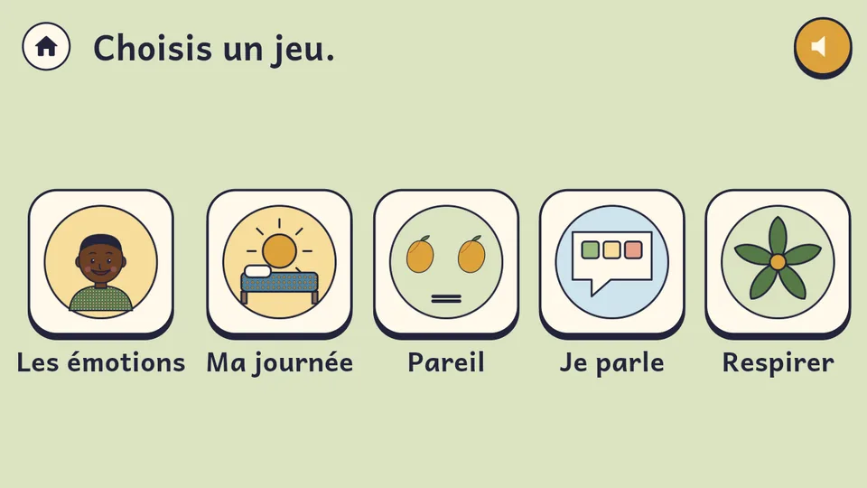
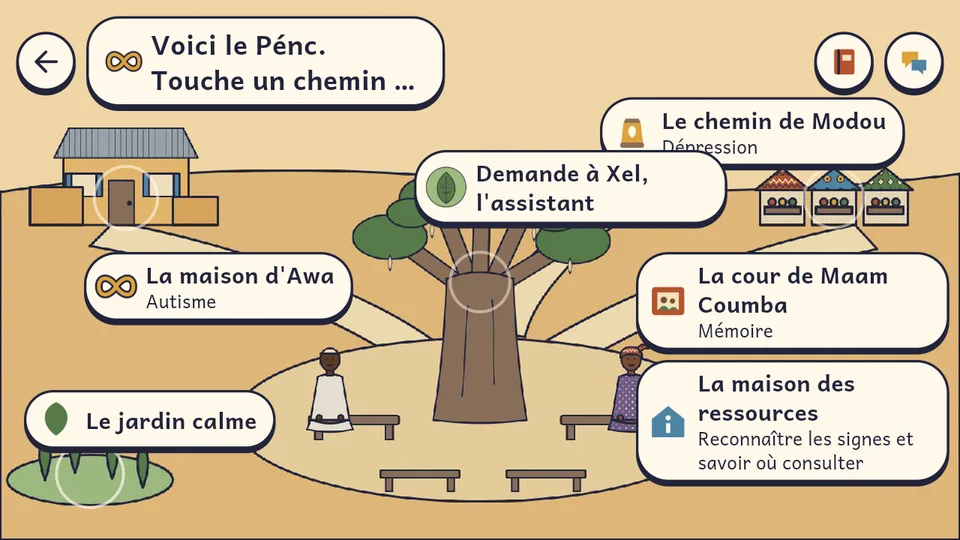

L’hôpital numérique de la santé mentale au Sénégal
Autisme
Comprendre, accompagner, inclure. Votre enfant a sa place.
Du premier doute au suivi régulier
-
Repérer
Des questionnaires validés (inspirés du M-CHAT, du SNAP-IV, du PHQ-9…), lus à voix haute dans votre langue. Ce n’est pas un diagnostic : c’est le signal qu’il faut consulter.
-
S’orienter
Les structures sont classées selon le trouble, l’âge, la distance, le coût et la langue parlée. Vous demandez la prise en charge en un geste.
-
Être suivi
Rendez-vous, consultation vidéo, messages chiffrés, ordonnances et pharmacies proches, rappels par Telegram, WhatsApp ou SMS. L’équipe soignante voit en premier les situations les plus urgentes.
Où être suivi, partout au Sénégal
Services de psychiatrie et de pédopsychiatrie, centres de santé mentale, addictologie, centres et écoles pour enfants : l’annuaire national, avec ses sources officielles.
Chargement des structures…
Fiches « partenaire » : vérifiées et reliées à SAMA XHEL. Les autres établissements proviennent d’OpenStreetMap (© contributeurs OpenStreetMap, ODbL) : appelez avant de vous déplacer.
Faire un test de repérage
Anonyme, rien n’est enregistré. Pour garder les résultats et les montrer au médecin, utilisez l’application.
Pas besoin de savoir lire
Beaucoup de parents, surtout dans les villages, ne lisent pas le français. SAMA XHEL leur parle et les écoute.
- Parler comme sur WhatsApp
- Le parent appuie sur le micro et parle dans sa langue. L’assistant comprend, lui répond à voix haute, ouvre la carte ou le rendez-vous, et transmet le message à l’équipe qui suit l’enfant. Le médecin répond par un vocal.
- Un guide vocal sur chaque écran
- Wolof, pulaar, sérère, diola, mandinka, bambara, français, anglais.
- Sur tous vos appareils
- Téléphone et tablette Android, ordinateur (dans le navigateur). La version iPhone est en cours de publication.
- AndroidtéléphoneDisponible
- TabletteAndroidDisponible
- OrdinateurnavigateurDisponible
- iPhoneApp StoreBientôt
Chaque établissement a son portail
Logo, couleurs, services, personnel et dossiers : chaque hôpital, centre ou école garde son propre espace, séparé des autres. Les familles le rejoignent en un geste.
- Chargement des établissements…
Créer mon hôpital sur SAMA XHEL
Votre établissement n’accède à aucun patient tant que son adhésion n’est pas validée.
- Demande nom, type, région, services, responsable
- Pièces agrément ou arrêté, NINEA, lettre de la direction
- Visite sur place rencontre avec le responsable
- Portail ouvert l’administrateur invite son personnel
Pour lancer la démarche, écrivez-nous en indiquant le nom de l’établissement et le responsable à contacter.
Demander l’adhésion (WhatsApp) ou appeler le +221 77 470 21 57Déjà sur SAMA XHEL ? Le personnel et les familles se connectent dans l’application, dans l’espace de leur établissement.
Médecins, thérapeutes, secrétaires : rejoignez votre structure
Chaque structure garde la main sur son équipe. Personne n’accède aux dossiers sans vérification :
- Vous déposez vos pièces : diplôme, pièce d’identité, et pour un médecin l’attestation d’inscription à l’Ordre des médecins.
- L’administration de la structure les vérifie.
- Elle vous convoque à un entretien, avec les originaux.
- Après l’entretien seulement, votre accès est ouvert (avec double authentification).
Votre espace candidat
Déposez votre dossier en quelques minutes, puis suivez chaque étape : vérification des pièces, convocation, décision.
Vous pourrez rejoindre plusieurs établissements. Aucun accès aux patients avant la validation.
L’application SAMA XHEL Santé
Pour les familles : tests, établissements, rendez-vous, consultation vidéo, messages chiffrés, assistant vocal, ordonnances et pharmacies, rappels par Telegram, WhatsApp ou SMS.
Pour les équipes : file des patients classée par urgence, dossiers, agenda, comptes rendus protégés par le secret médical.
Téléphone ancien (Android 32 bits) : version légère
- Ouvrez le fichier téléchargé.
- Si Android le demande, autorisez « installer des applications inconnues » pour votre navigateur.
- Appuyez sur « Installer », puis ouvrez SAMA XHEL.
Disponible sur Android (téléphone et tablette) et sur ordinateur. La version iPhone est en cours de publication.


JÀMMU XEL, le jeu
Un jeu pour comprendre la santé mentale, en wolof, en français et en anglais. Tout se fait à la voix : pas besoin de savoir lire.
- Pour l’enfant : reconnaître les émotions, remettre sa journée dans l’ordre, trouver le même, se faire comprendre avec le tableau « Je parle », respirer. La difficulté s’adapte à l’enfant, sans échec ni score.
- Pour les parents : accompagnez Awa et son fils Amadou, Modou et Maam Coumba ; apprenez à reconnaître les signes et à savoir où consulter ; posez vos questions à Xel, l’assistant.
Téléphone ancien (Android 32 bits) : version légère
Le jeu fonctionne sans Internet, sans compte, et ne garde aucune donnée de santé. Il ne pose aucun diagnostic : seul un professionnel peut évaluer.
Aider une famille à payer les séances
Les dons financent les séances d’orthophonie et de psychomotricité des familles qui ne peuvent pas payer. Les montants sont publiés, jamais les noms.